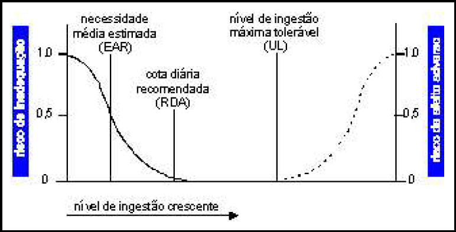

O estado nutricional de um indivíduo depende, entre outros fatores, da energia e do consumo de nutrientes, analisados segundo a ingestão dietética de referência (IDR). Considerando a figura abaixo, analise as asserções apresentadas a seguir.
Dietary Reference Intake (IOM, 2000) (com adaptações).
O nutricionista, ao avaliar se um indivíduo ingere quantidades adequadas de um nutriente, deve comparar os dados de consumo com a cota diária recomendada (RDA) do nutriente, exceto para a ingestão de energia,
PORQUE
a avaliação da necessidade de energia deve ser embasada na necessidade média estimada (EAR), pois a ingestão de energia embasada na RDA pode ser excessiva e resultar no ganho de peso corpóreo.
Com referência a essas asserções, assinale a opção correta.